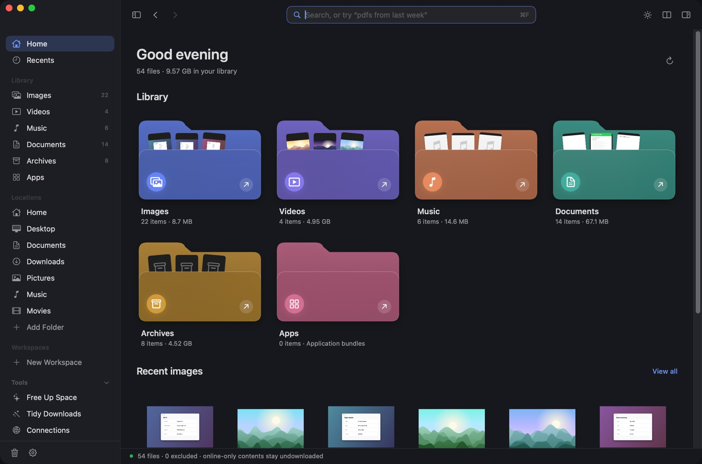
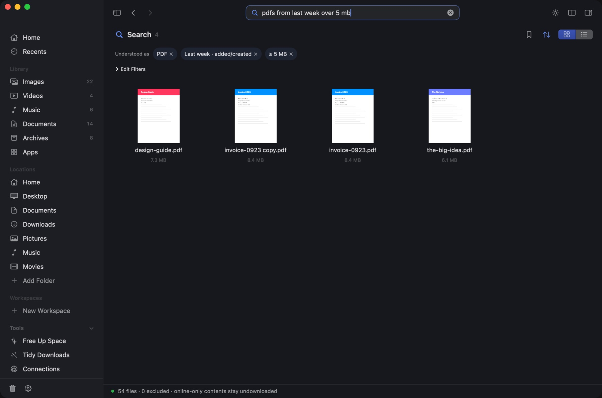
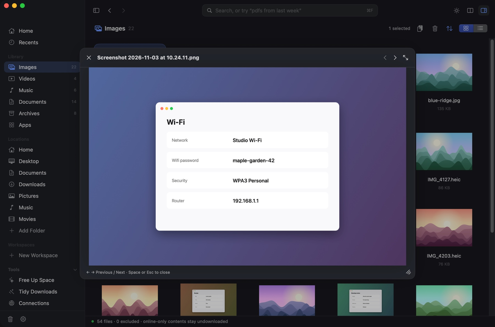
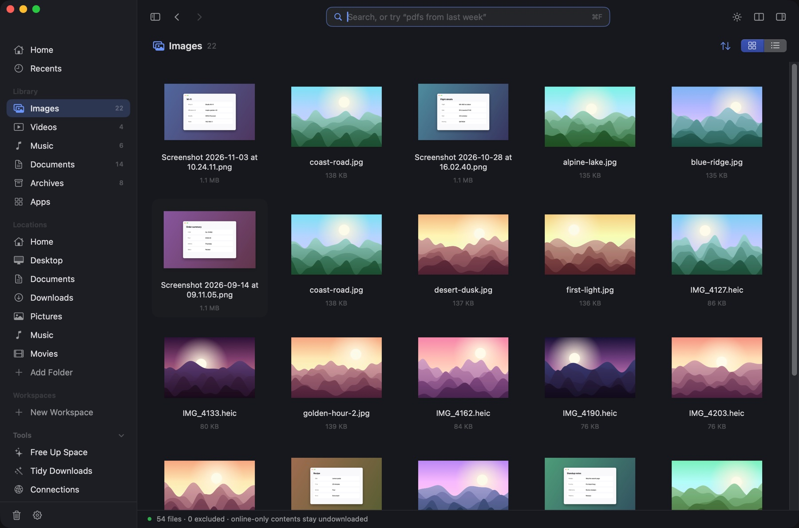
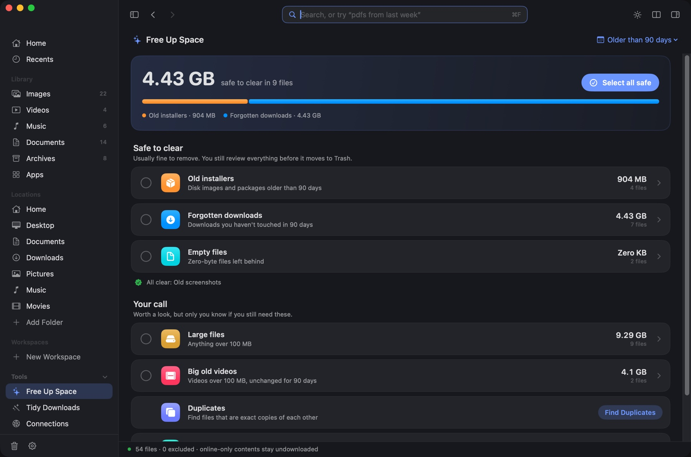
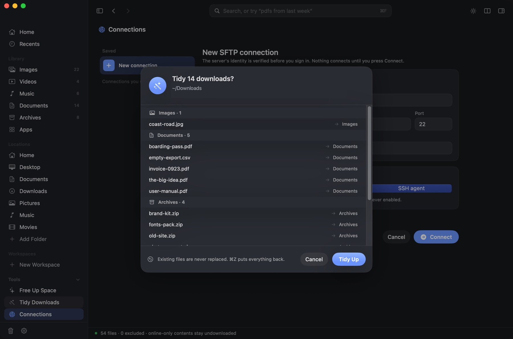
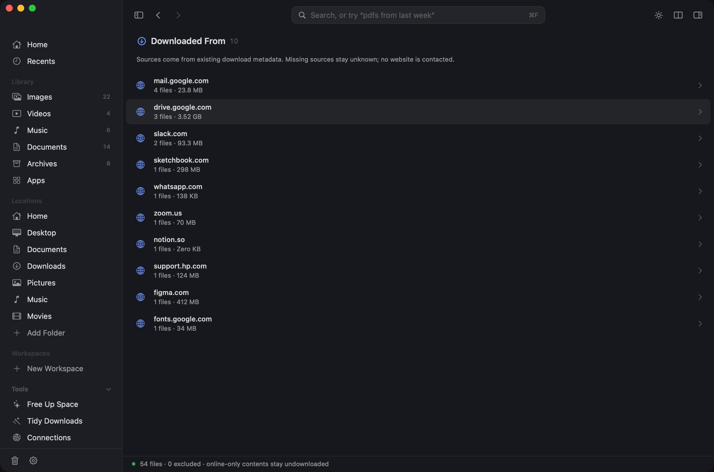
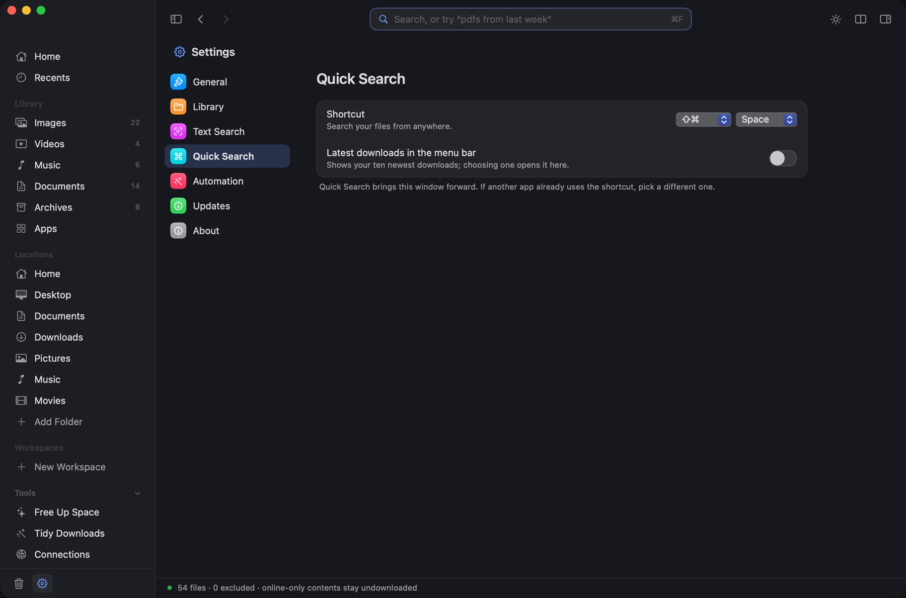
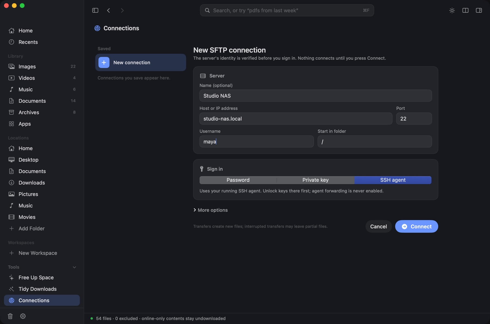
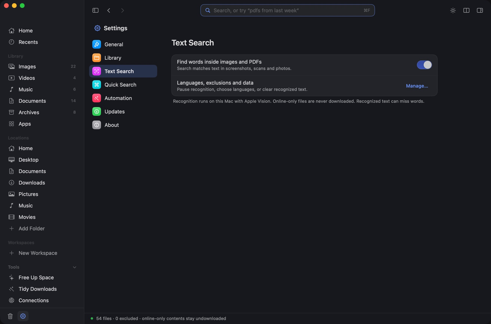

Feel at home in MacEx in five minutes.
Updated · MacEx 0.8.1
What is MacEx?
MacEx is a file library app for Mac. It gathers your images, videos, music, documents, archives and apps into one window, finds any file from a plain description like “pdfs from last week over 5 mb”, previews files without opening another app, and helps you free up space by reviewing old installers, forgotten downloads and duplicates before they go to Trash. It runs on macOS 14 or later, works without an account, and is a one-time purchase.
Four short lessons. Each one is something to try on your own files.
Three things that make everything easier
- Everything happens in one window. Files open, preview and play inside MacEx.
- Nothing is deleted for good. Cleanup only ever moves files to Trash, and only the ones you pick.
- Back and Forward always work. Use the toolbar arrows or ⌘[ and ⌘].
I want to…
Ask AI about MacEx
Opens the assistant in a new tab with a question about MacEx already typed. Your question goes to that company. AI can make mistakes, so check anything important against these docs.
Install MacEx
MacEx needs macOS 14 Sonoma or later. It runs on Apple silicon and Intel Macs.
- Open the MacEx disk image you downloaded.
- Drag MacEx into your Applications folder.
- Open MacEx from Applications.
Buy MacEx
MacEx is a one-time purchase. There is no subscription and no account to create.
- Checkout is handled by Dodo Payments.
- Your receipt arrives by email.
- Every feature is included, and updates are free.
Allow folder access
The first time MacEx looks in Desktop, Documents or Downloads, macOS asks if that’s OK. Click Allow for the folders you want in your library.
MacEx looks in your Desktop, Documents, Downloads, Pictures, Music and Movies folders, and lists your installed apps.
Add or remove folders
- Click Add Folder in the sidebar to include a folder from anywhere. You can add up to eight.
- Open Settings → Library to remove a location you don’t want.
Your library
Home shows everything MacEx found, sorted into Images, Videos, Music, Documents, Archives and Apps. Click a folder to open it.

- Recents lists your newest files first.
- Locations opens a real folder, such as Desktop or Downloads.
- Workspaces group files for a project without moving them.
- Double-click a file to open it in its usual app. Folders open inside MacEx.
Search in plain words
Press ⌘F and type what you remember. MacEx turns your words into filters and shows them under Understood as.

Things you can type
- pdfs from last week over 5 mb
- videos from my iphone in august
- screenshots with wifi password
- zips bigger than 1gb older than 6 months
- pdfs from gmail
- large videos in Downloads
Fix a filter
- Click the × on a chip to remove that filter.
- Click Edit Filters to change the type, size, source or date yourself.
- Click the bookmark to save the search to your sidebar.
Good to know
- “Last week” means the previous calendar week.
- Sizes use decimal units: 1 MB is 1,000,000 bytes.
- A file with no camera, source or date information is left out when you filter by that.
- To find words inside images and PDFs, turn on Settings → Text Search.
Preview and Copy Text
Select a file and press Space. The preview opens inside the window. Press ← or → to flip through files, and Space or Esc to close.

Copy text out of an image or PDF
Select the file and press ⇧⌘C, or click Copy Text in the toolbar. The text is on your clipboard.
- You can select up to 20 files and copy the text from all of them at once.
- Recognition can miss words, especially in blurry images.
See the details
Press ⌘I to open the Inspector. It shows size, dates, dimensions, duration, camera and where the file came from, when that information exists.
Grid, list and sorting

| Thumbnail grid | ⌘1 |
| List | ⌘2 |
| Bigger or smaller cards | ⌘+ ⌘− |
| Two folders side by side | ⌘\ |
| Light or dark | ⌃⌘T |
Click the arrows button in the toolbar to change the sort order. Choose System, Light or Dark in Settings.
Music
Double-click a song. It plays in the toolbar and keeps playing while you browse.
| Play or pause | ⌘Space |
| Previous or next track | ⌘← ⌘→ |
Free up space
Open Free Up Space in the sidebar, or press ⇧⌘K. MacEx sorts what it found into two groups.

- Safe to clear: old installers, forgotten downloads, old screenshots and empty files.
- Your call: large files, big old videos, duplicates, similar photos and apps you haven’t used.
- Click a row to see the files inside it.
- Tick what you want gone.
- Review the list, then move it to Trash.
Use Older than 90 days at the top right to change what counts as old.
Duplicates and similar photos
Press ⇧⌘D, or click Find Duplicates in Free Up Space.
- Duplicates are exact copies. MacEx compares the files byte for byte before calling them the same.
- MacEx suggests which copy to keep. You choose what goes to Trash.
- Similar photos are bursts and near-identical shots. They look alike but are not identical, so review each group yourself.
Tidy Downloads
Click Tidy Downloads in the sidebar. MacEx shows where each file will go before anything moves.

- Files are sorted into folders such as Images, Documents and Archives inside Downloads.
- Existing files are never replaced.
- Press ⌘Z to put everything back.
Trash and restore
Click the Trash icon at the bottom of the sidebar. MacEx remembers the last 500 files it moved there and where each one came from.
- Choose a file and restore it to its original folder.
- Restoring never replaces a file that is already there.
- Files you already emptied from Trash can’t be restored.
Automation rules
Rules are off until you turn them on in Settings → Automation. They only work in folders you added yourself with Add Folder.
- Old installers: move
.dmgand.pkgfiles to Trash after the number of days you set. - Screenshots: file screenshots into a folder for each month.
Rules run every 30 minutes while MacEx is open. They never delete a file for good.
Downloaded From
Press ⇧⌘J to see your downloads grouped by the website they came from. Click a website to see its files.

- You can also search for it:
pdfs from gmail. - MacEx reads the source your browser saved with the file. If there isn’t one, the source stays unknown.
- Only the website name is kept. Full links and your browsing history are not stored, and no website is contacted.
Quick Search and the menu bar
Press ⇧⌘Space in any app. MacEx comes forward with the search field ready.

- Change the shortcut in Settings → Quick Search.
- Turn on Latest downloads in the menu bar to see your ten newest downloads. Drag one out, or click it to open it in MacEx.
Shortcuts and links
MacEx adds three actions to the Shortcuts app:
- Find Files
- Get Latest Download
- Search in MacEx
You can also open a search from a link: macex://search?query=pdfs from last week
Connections (SFTP)
Click Connections in the sidebar, or press ⌘K, to browse a server in the same window.

- Enter the host and your username.
- Choose how to sign in: password, private key or SSH agent.
- Click Connect. The first time, MacEx shows the server’s fingerprint. Check it before you confirm.
- Your password is saved to Keychain only if you ask.
- If a server’s fingerprint changes, MacEx stops and asks you to review it.
- Uploads and downloads never replace a file that already exists.
- A transfer you cancel can leave a partial file behind. MacEx tells you which one.
Keyboard shortcuts
Press ⌘/ in MacEx to see this list at any time.
| Find and look | |
|---|---|
| Search | ⌘F |
| Quick Search from any app | ⇧⌘Space |
| Preview | Space |
| Open | ⌘O |
| Inspector | ⌘I |
| Copy Text | ⇧⌘C |
| Get around | |
| Back and Forward | ⌘[ ⌘] |
| Home | ⇧⌘H |
| Go to Folder | ⇧⌘G |
| Downloaded From | ⇧⌘J |
| Free Up Space | ⇧⌘K |
| Duplicates | ⇧⌘D |
| Connect with SFTP | ⌘K |
| Settings | ⌘, |
| View | |
| Grid and List | ⌘1 ⌘2 |
| Bigger or smaller cards | ⌘+ ⌘− |
| Split View | ⌘\ |
| Light or dark | ⌃⌘T |
| Refresh | ⌘R |
| Files | |
| New Folder | ⇧⌘N |
| Duplicate | ⌘D |
| Move to Trash | ⌘⌫ |
| Undo | ⌘Z |
| Copy or move to the other pane | F5 F6 |
| Music | |
| Play or pause | ⌘Space |
| Previous or next track | ⌘← ⌘→ |
Troubleshooting
macOS won’t open MacEx
Open System Settings → Privacy & Security, scroll down, and click Open Anyway. See Install MacEx.
Some of my files are missing
- Check that MacEx is allowed to read the folder. See Allow folder access.
- Open Settings → Library. It lists any location MacEx couldn’t read.
- Press ⌘R to refresh.
- Hidden files and the insides of app bundles are left out on purpose.
Search can’t find words inside my images
- Turn on Settings → Text Search.
- Give it time. Reading a large library takes a while, and MacEx slows down on battery or in Low Power Mode.
“From my iPhone” or “from Gmail” misses files
Those filters rely on information saved inside the file. A file without camera or source information is left out.
Quick Search does nothing
Another app is probably using the same shortcut. Pick a different one in Settings → Quick Search.
An iCloud file shows no thumbnail
Files stored only in iCloud are listed, but MacEx never downloads them for you.
Privacy and permissions
MacEx works on your Mac. There is no account and no cloud AI.

- Search runs on your Mac.
- Text recognition is off until you turn it on, and uses Apple’s on-device Vision.
- iCloud files that are online-only are never downloaded by MacEx.
- Download sources are kept as website names only.
- Server passwords go to your Keychain, and only if you choose to save them.
- Update checks are off until you turn them on.
Where MacEx keeps its data
Library details, settings, recognized text and Trash history are stored in ~/Library/Application Support/MacEx/.
What MacEx can’t do
MacEx runs as you. It can’t read a folder macOS hasn’t allowed, and it never changes your system permissions for you.
Nothing in the docs matches that. Try a shorter word.